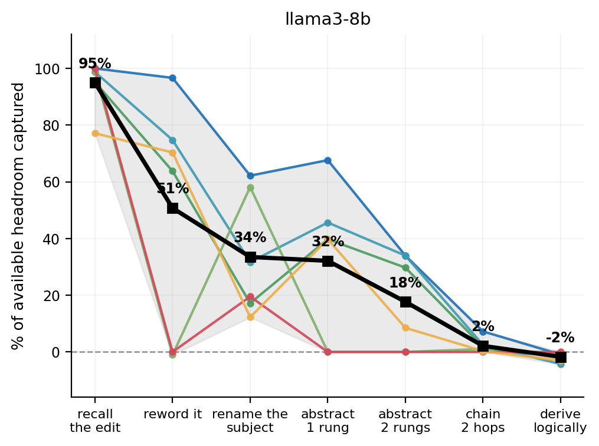

Ben Bethell
Play · Machine Learning · Interpretability

Hi! I'm Ben Bethell, a machine learning researcher and engineer.
I'm interested in using adventure play to understand and evaluate machine learning systems, with a focus on safety and real-world use.
I recently completed an MSc in Data Science at Birkbeck, University of London. I live in London.
Selected projects
Research
Model editing: capacities and limits
Do model-editing methods change what a language model knows, or only what it recalls? I implemented six editing methods (ROME, MEMIT, AlphaEdit, AnyEdit, GRACE, REMEDI) under one evaluation harness on GPT-2-XL and LLaMA-3-8B, and built GENIE, a benchmark that tests whether an edit is used rather than just recalled. Every method installs the edit at 92.6–100% on CounterFact; the best score two rungs of abstraction later is 12.6%.